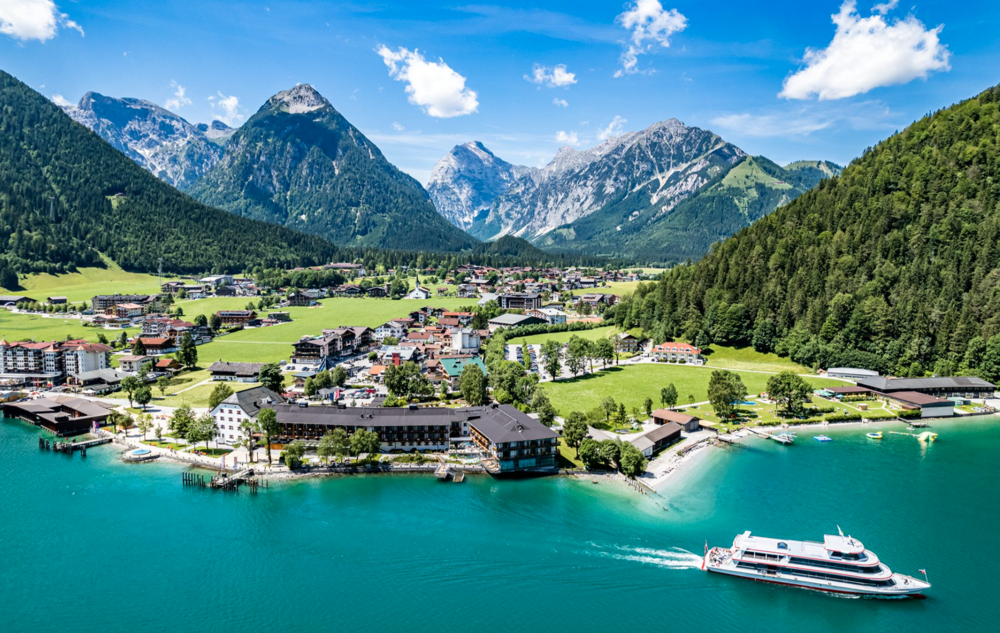
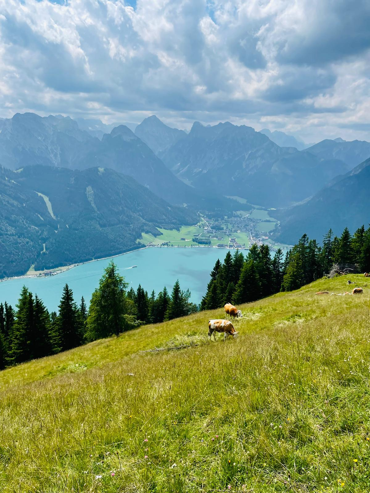
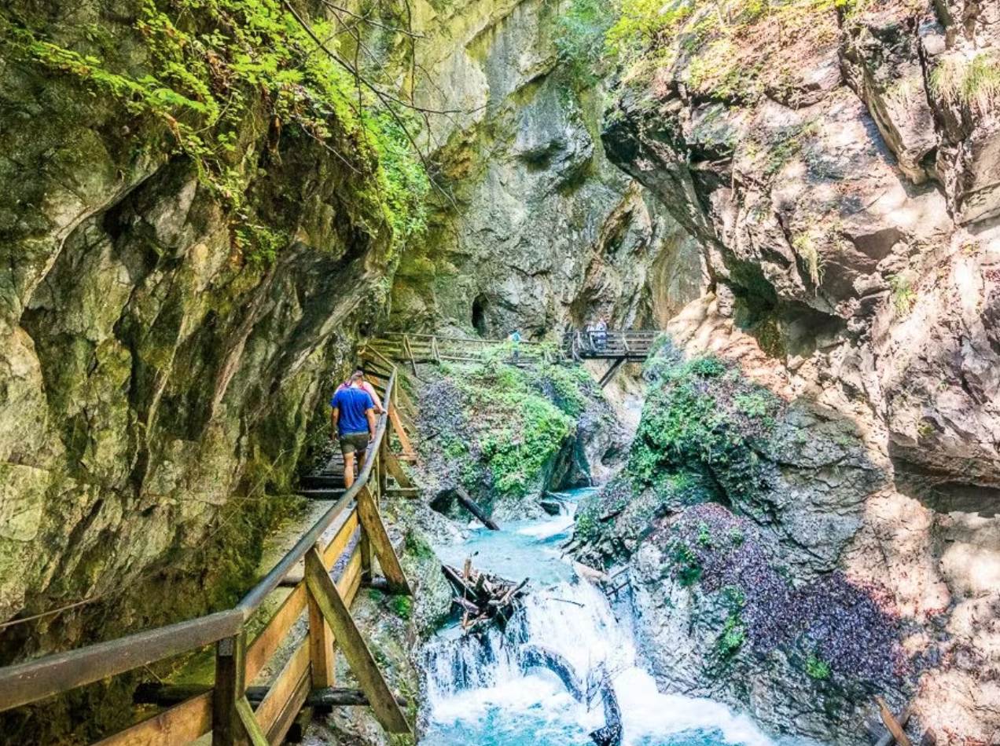
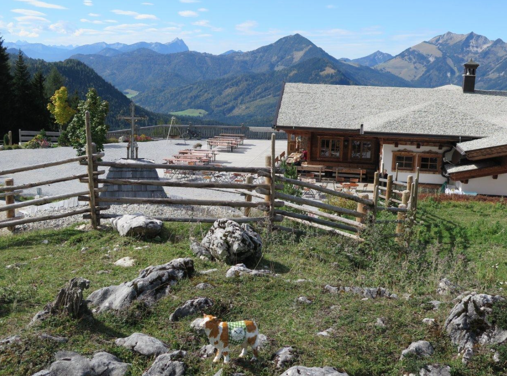
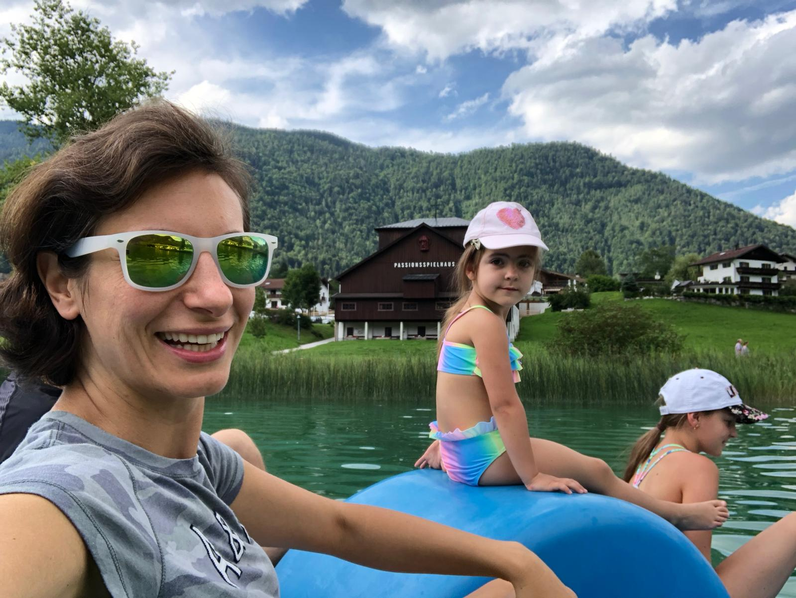
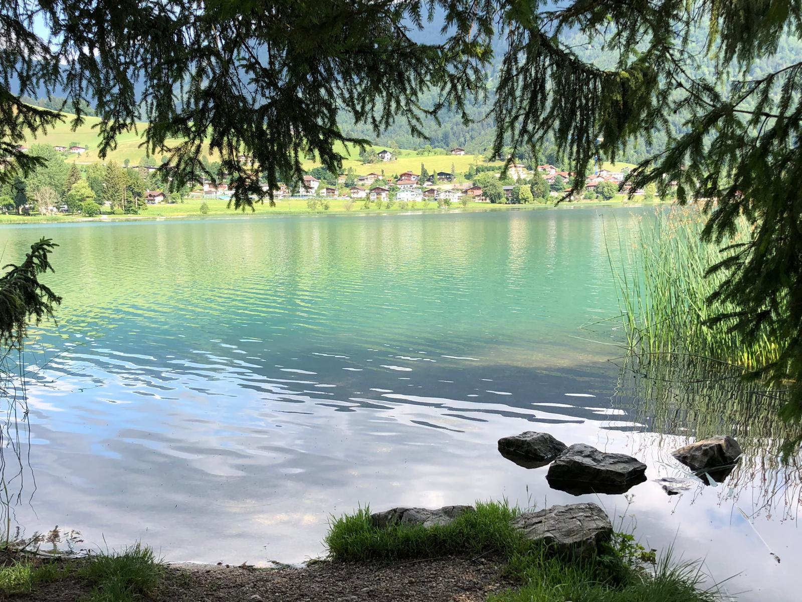
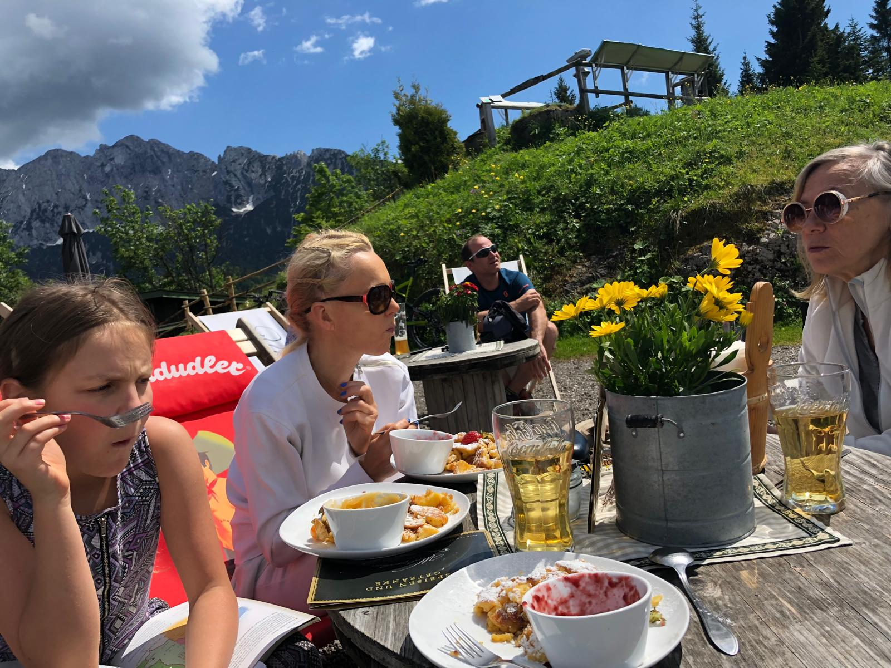
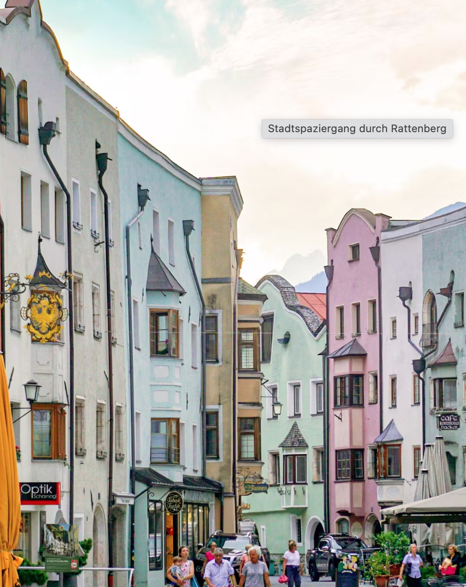

Co warto zobaczyć
Miejsca, które znam i polecam
Żadnych atrakcji dla turystów. Same miejsca, do których sam wracam.

achensee.com ↗
Największe jezioro Tyrolu — góry wchodzą prosto do wody, skala robi wrażenie. Chłodniejsze niż mniejsze jeziorka, za to idealne do kajakarstwa (niestety trzeba byc czlonkiem klubu) lub spokojnej przejazdzki stateczkiem. Rankiem często jest mgła nad taflą wody.

rofanseilbahn.at ↗
Kolejka z Maurach (przy Achensee) wjeżdża na 1834 m do Erfurter Hütte. Stamtąd prowadzi szlak grzbietowy z widokiem na jezioro — i zejście obok wodospadu Dalfazer Wasserfall. Jeden z lepszych widoków w całym Tyrolu.

wolfsklamm.tirol ↗
Dramatyczny wąwóz z drewnianymi kładkami przybitymi do skalnych ścian nad rwącą rzeką. Na końcu — klasztor St. Georgenberg zawieszony na klifie. Ciemno, chłodno, robi wrażenie. Dobra opcja na upał.

schloss-tratzberg.at ↗
Zamek renesansowy nad doliną Innu, który wygląda jakby czas się tu zatrzymał — ozdobne malowidła, habsburskie genealogie na całych ścianach, komnaty niezmienione od XVI wieku. Tylko wycieczki z przewodnikiem, co sprawia, że jest bardziej intymnie. W parze z Wolfsklamm to dobry plan na cały dzień.

kala-alm.at ↗
Start spod Gasthof Schneeberg — leśna ścieżka, 1.5h podejście do schroniska Kala Alm (1426 m). Potem jeszcze 30 minut na Pendling (1563 m) — jeden z lepszych panoramicznych punktów widokowych w okolicach Kufstein: dolina Innu, Kaisergebirge, Bawaria.

Turkusowe, ciepłe. Mała oplata (zbiera gosc na rowerze ;-) Polecam wynająć SUP lub rower wodny i popłynąć na środek — odbicia gór w wodzie są rewelacyjne. Przyjeżdżają tu głównie miejscowi. Najlepiej rano lub wieczorem — w południe robi się tłoczno.

Bardziej dzikie i spokojniejsze niż Thiersee. Prawy brzeg ma leśną ścieżkę, gdzie można znaleźć ukryte miejsca między drzewami tuż przy wodzie. Rano jest tu wyjątkowo. Spacer wokol jeziora lub z opcja wejscia na Thierberg Kapelle wedlug oznaczen trasy (tam sa poziomki).

festung.kufstein.at ↗
Stara jednoosobowa kolejka linowa obok centrum Kufstein — każde krzeselko jedzie samotnie, nogi dyndają nad lasem. Na górze: alpaki, kilka szlaków i panorama doliny.

rattenberg.at ↗
400 mieszkańców, jedna główna ulica, zachowana średniowieczna zabudowa. Słynie z dmuchanego kryształowego szkła — można oglądać rzemieślników przy pracy. Ruiny zamku powyżej, Inn tuż obok. Dobra baza na Noc 1 — klimatyczne, nieturystyczne, spokojne.